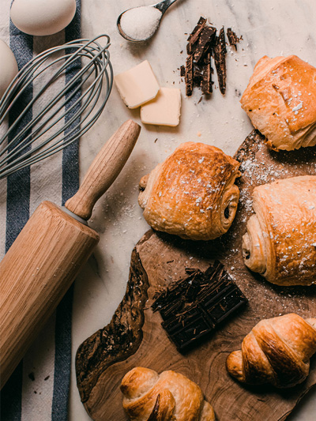
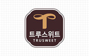

HOME>
사업부문 >
식품사업
식품사업
‘No.1 Food & Service Innovator’

식품부문은 식품통합브랜드 ‘큐원’을 중심으로 고객에게 보다 높은 가치를 제공하기 위해 힘쓰고 있습니다. 설탕, 밀가루, 프리믹스, 유 지 등 식품 기초 소재를 기반으로 고객이 원하는 제품을 공동개발하 고, 개발 제품을고객사에 제안하는 사업전략을 펼치며 경쟁력 강화 에 힘쓰고 있습니다. 또한 식자재 유통 전문 브랜드 ‘서브큐’를 론칭 하여 제과재료, 외식자재 등 전문 식자재 유통사업을 확장하여 유통 경쟁력을 강화하고 있습니다.
또한 외식사업 및 제과재료, 외식자재 유통 등의 신규사업을 적극적으로 확대해 ‘No.1 Food & Service Innovator’의 가치를 실현해 나가고 있습니다.
- 큐원은 Quality NO.1의 의미를 담아 탄생하였습니다.
- 큐원은 건강과 즐거움을 추구하는 젊은 라이프 스타일을 제안하는 삼양의 식품 통합 브랜드 입니다.
-
트루스위트 
트루스위트(TRUSWEET)는 소비자들이 믿고 선택할 수 있도록 큐원에서 만든 프리미엄당 브랜드 입니다.브랜드 사이트 바로가기
-
큐원 상쾌환
큐원 상쾌환은 음주 후 상쾌환 아침을 맞고자 하는 분들을 위해 출시된 숙취해소 전문 브랜드입니다.브랜드 사이트 바로가기